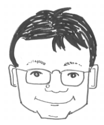

Osamu WATANABE

Mail: watanabe-at-is.titech.ac.jp
Click here for Japanese page
(The home page of Watanabe research group)
Some Topics
-
ELC project:
Exploring the Limit of Computations (2012.7-2017.3, OW: project leader)
We investigate various approaches
for understanding computation,
in particular, the limitations of computation,
which has not been understood well including the famouse P vs. NP conjecture.
-
This project is supported
by Grants-in-Aid for Scientific Research of the Ministry of Education,
as one of the largest and the most important category.
-
The project consists of more than forty top Japanese researchers
in theory of computation, in particular,
in complexity theory and the design and analysis of algorithms.
-
Project web page:
the ELC web page.
-
Comp View project:
Computationism as a Foundation for the Sciences (2009.7-2012.3, OW: project leader)
We successfully terminated the project,
and we received the highest evaluation by the Global COE evaluation committee.
-
This project was selected as
one of the projects
under the
Global COE (Center of Excellence) program of Japanese government.
(This program provides funding support
for establishing education and research centers that perform
at the apex of global excellence
to elevate the international competitiveness of the Japanese universities.)
-
We proposed a research program
for establishing a new paradigm or framework of science
that seeks to rethink various scientific phenomena
from the point of view of computation,
which we call the CompView approach.
-
We also made up a doctoral program
for creating specialits of the CompView approach;
those who can pursue this new paradigm.
Our program is to foster doctoral students
to have skills in both high-performance computing
and mathematical modeling/analysis.
-
Project web page:
CompView web page.
(Please note that
the contents have not been updated after 2011.)
Research Interest
- Computational Complexity Theory:
- P versus NP problem (worst-case and average-case)
- Design and analysis of randomized algorithms
- Randomness and Computation:
- Analsysis of randomized events appearing in computation
- Computational learning
Survey Papers and/or Web Pages on Some of My Research Topics
Professional Activities
More Information
Links
Address
Postal Address:
Department of Mathematical and Computing Science
Tokyo Institute of Technology
Meguro-ku Ookayama, Tokyo 152-8552
Japan
email address: watanabe-at-is.titech.ac.jp
fax: +81-3-5734-3210, tel: +81-3-5734-2688